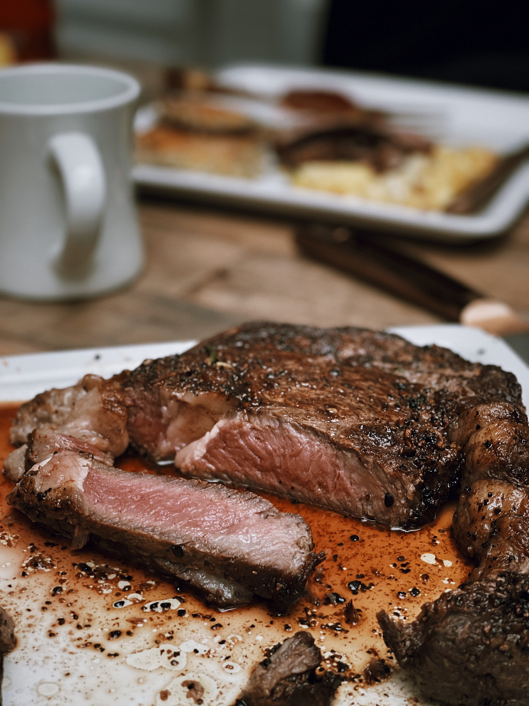

Pot Roast Beef With French Onion Gravy

The Magic of Fire
Ever since the invention of fire man has experimented with food so as to produce the tastier side. The choice is to either fry, boil, flame-grill, roast over embers or anything that you can think of. In this scenario, the oven is the principal mode of heat supply.
Ingredients
- 1kg silverside or topside of lean beef
- 2 Tablespoons olive oil
- 8 young carrots, tops trimmed
- 1 celery stick, finely chopped
- 200ml white wine(optional)
- 600ml rich beef stock
- 2 bay leaves
- 500g onion
- A few thyme sprigs
- 1 Teaspoon butter
- 1 Teaspoon brown or light muscovado sugar(optional)
- 2 Teaspoons plain flour
Steps
- Heat oven to 160 degrees celsius. Rub the meat with 1 teaspoon of the oil and plenty of seasoning. Heat a large flameproof casserole dish and brown the meat all over for about 10 mins. Meanwhile, add 2 teaspoons oil to a frying pan and fry the carrots and celery for 10 mins until turned golden
- Lift the beef onto a plate, splash the wine into the hot casserole and boil for 2 mins. Pour in the stock, return the beef, then tuck in the carrots, celery and bay leaves, trying not to submerge the carrots too much. Cover and cook in the oven for 2 hours(turn the beef halfway through cooking, if you like).
- Meanwhile, thinly slice the onions. Heat 1 tablespoon of oil in a pan and stir in the onions, thyme and some seasoning. Cover and cook gently for 20 mins until the onions are softened but not coloured. Remove the lid, turn up the heat, add the butter and (sugar), then let the onions caramelize to a dark golden brown, stirring often. Remove the thyme sprigs, then set aside.
- When the beef is ready, it will be tender and easy to pull apart at the edges. Remove it from the casserole and snip off the strings. Reheat the onion pan, stir in the flour and cook for 1 min. Whisk the floury onions into the beefy juices in the casserole, to make a thick onion gravy. Taste for seasoning. add the beef and carrots back to the casserole, or slice the beef and bring to the table on a platter, with the carrots to the side and the gravy spooned over